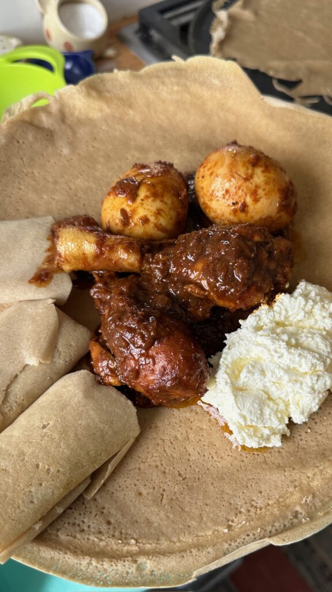

Ethiopia · East Africa
Injera with Doro Wat
Cultural background
Injera is an iconic Ethiopian flatbread with a naturally fermented tang and airy spongy texture. Served with doro wat, it is a shared comfort dish and a centerpiece in Ethiopian hospitality.
90 minPrep
90 minCook
4Servings
HardDifficulty

Ingredients
Instructions
Step 1
Ferment teff batter 2–3 days until bubbly and tangy.
Step 2
Cook onions dry, then add butter and berbere.
Step 3
Simmer chicken in the sauce until tender.
Step 4
Pour injera on a hot griddle, cover, and cook one side only.
Nutrition (per serving)
| Calories | 510 kcal |
|---|---|
| Protein | 32 g |
Country of origin
📍
Ethiopia
Ethiopia